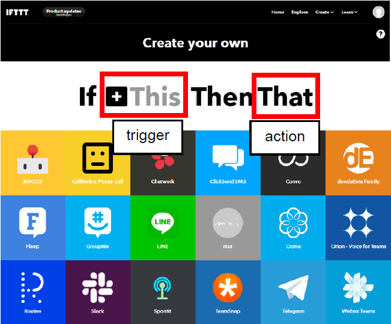
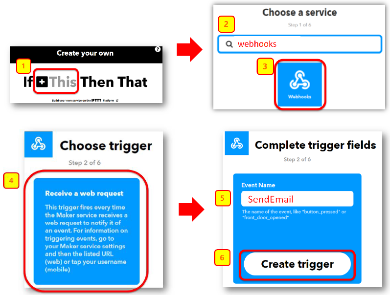
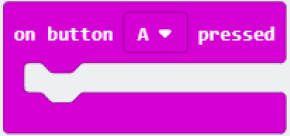
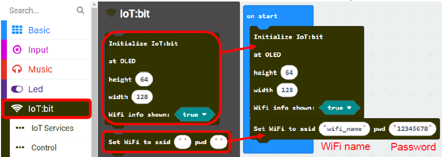
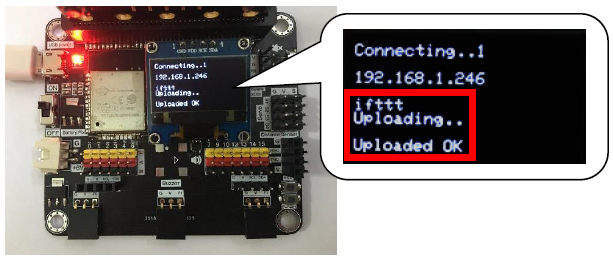

6. Chapter 2: Send Email by IFTTT¶
IFTTT is the way to connect hundreds of the apps and devices, including Twitter, Dropbox, Email, Google Assistant, etc. By the basic programming logic “if this then that”, it connects IoT services through their API (application programming interface). In IFTTT, you can make your own applet and link services together by “if this(trigger) then that(action)”. For example, if we select webhooks (micro:bit button A) as trigger, Email (send email to your mailbox) as action. When micro:bit button A is pressed, it triggers (webhooks) and implement the action (send email) in IFTTT.

In this chapter, you will learn using micro:bit to activate trigger (webhooks). After that, it can implement other services (e.g. email)
6.1. Create event “Email” in IFTTT and get the key¶
Step 1
Go to http://www.ifttt.com, register an account and login to the platform

Step 2
On the top right menu, click “Create” > “Applets”

Step 3
Select this -> select webhooks -> input Event Name (eg. Event Name: SendEmail)，then click “Create trigger”

Step 4
Select “That” > Email

Step 5
Select “Send me an email” , Input email title and body, then click “Create action”

Step 6
Open your web browser, open the top right menu, select “My services” > “Webhooks”

Step 7
Select “Documentation” ，Copy your Webhooks Key as follows:

6.2. Programming (Makecode)¶
On button A pressed:

It will trigger the following function once after button A is clicked
Send IFTTT key “”, event name “” value1””:

This function will trigger webhooks to IFTTT with the key provided
a. Event name: webhooks event name
b. Value1,2,3: you can send values to IFTTT
Step 1
Before you start, you need to initialize IoT:bit and connect micro:bit to the internet.
Select IoT:bit > Initialize IoT:bit and OLED and Set WiFi to ssid…pwd.

Step 2
Select Input >on button A pressed .

Step 3
Select IoT:bit > Send IFTTT key….
Once button A is clicked, it will send IFTTT request (send an email to your email box)

Step 4
Input the following value
a. IFTTT API key: “XXXXXXXXXXXXXXXXX “.
b. event_name: event name to trigger in Webhooks (eg. SendEmail)
c. value 1-3: input value1, value2, value3

Full Solution
MakeCode: https://makecode.microbit.org/_AK9d8aYbALx1
You could also download the program from the following website:
6.3. Result¶
After micro:bit is connected to WiFi and click button A, it will upload data to IFTTT.
Micro:bit start uploading, “ifttt uploading… “ is shown.
If data is uploaded successfully, “Uploaded OK” will be shown.

Email will be sent to your mailbox by IFTTT.